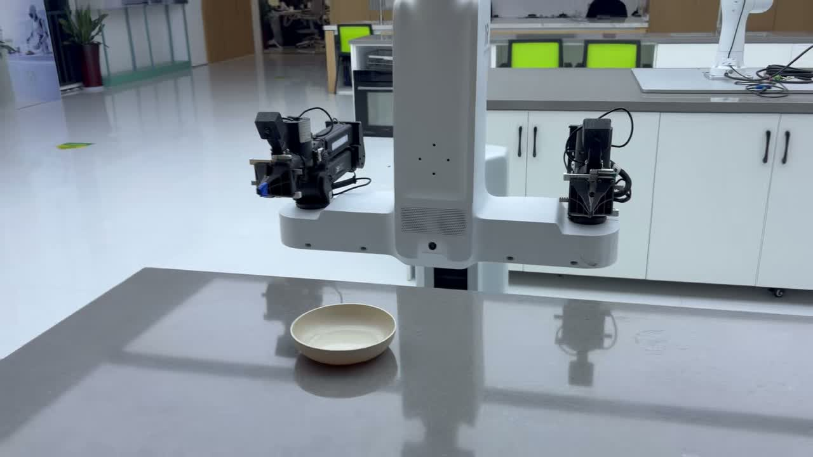
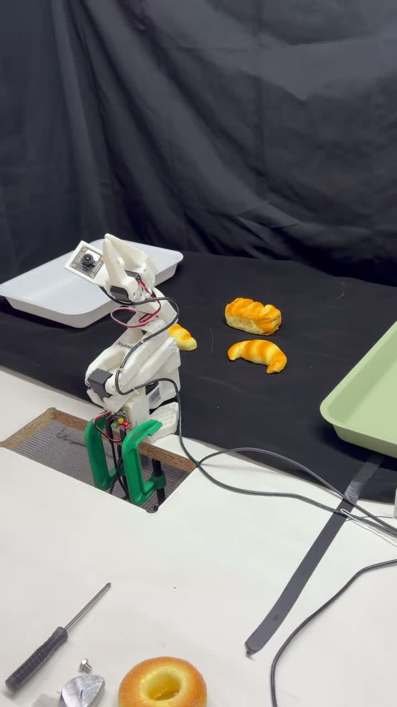
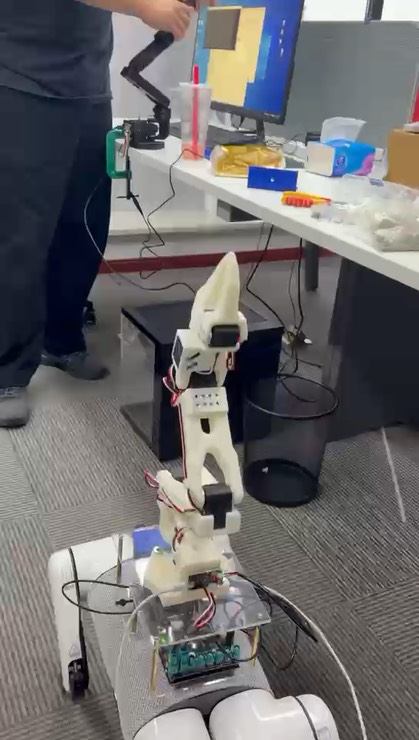
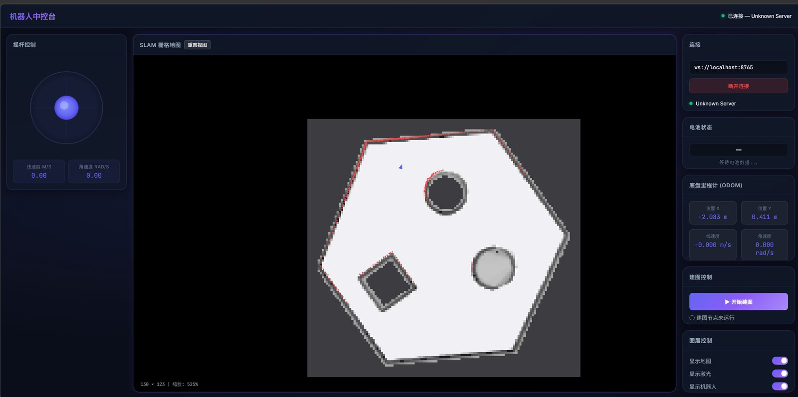

杭州老板电器股份有限公司 · 具身智能研究院
2026.07 — 2026.11算法实习生 · 杭州
- 开发餐后清洁机器人的任务系统：将抓取、导航、放置封装为 MCP 技能接口，接入 RPent 完成长程任务编排。
- 基于双臂机器人开展 π0.5 餐盘抓取训练与实机部署，处理餐盘位姿变化与放置容错。
- 负责数据平台开发，支撑示教数据的上传、整理与训练前处理；参与机械臂饮品制作与柔顺擦除任务。
自动化专业 2027 届本科生，2027 年 6 月毕业。做过的东西集中在一条线上：把演示数据变成策略，再把策略真正跑到机器上。在老板电器具身智能研究院、浙江大学 CAD&CG 全国重点实验室和一家智能装备企业实习过，接触过双臂机器人、桌面机械臂 SO-101、UR5e 与四足机器人平台。
具体做的事包括：演示数据采集与清洗，ACT / π0.5 等策略的训练与实机部署，多传感器接入与时间同步，机器人动作技能封装与上层任务编排，以及一个机器人数据标注与管理平台的完整开发。除此之外也写工具——ROS 与 ROS2 的驱动、可视化与中控台，这些代码都在 GitHub 上。
求职方向：具身智能算法、机器人算法、机器人软件开发。
算法实习生 · 杭州
实习生 · 杭州
算法实习生 · 杭州
四段和机器人直接相关的实践，每张卡片都配有实机录像或操作录屏。
 ▶
▶面向机器人示范数据的管理与标注平台，整体由我独立开发。把任务分派、人工标注、审核验收与数据集版本发布串成一条链路，支持多路相机、动作曲线与原始消息联合浏览。
代码 ↗
▶基于双臂机器人做 π0.5 餐盘抓取训练与部署，把抓取、导航、放置封装为可调用的技能，交给编排层组合成长程任务。

▶从零采集 300 组抓取放置演示，完成清洗、训练到实机部署的完整流程，并参与 SmolVLA、π0.5 等模型的复现与评测。
代码 ↗
▶把 SO-101 机械臂装到四足机器人背上，用一套遥控端同时驱动机器狗行走和机械臂动作，完成结构安装与整机联调。

在浏览器里监控和操作 ROS 2 机器人：SLAM 栅格地图、摇杆遥控、电池与里程计状态、建图启停与地图保存。前端 Vue，后端接 Foxglove WebSocket，一条脚本同时起前后端。
代码 ↗LeRobot、ACT、π0.5；演示数据采集与清洗、策略训练、实机部署与评测。
ROS / ROS2、多传感器接入、TF 坐标变换、时间同步、rosbag 数据处理；rokae_ros2、x2-robot-viewer 等驱动与可视化工具。
MCP 技能接口封装、RPent 任务编排、数据标注与管理平台开发（前端 + 后端 + 部署）。
Isaac Sim、MuJoCo；Cartographer 建图、AMCL 定位与导航流程调试。
找具身智能、机器人算法与机器人系统开发方向的工作。欢迎邮件联系，我通常当天回复。